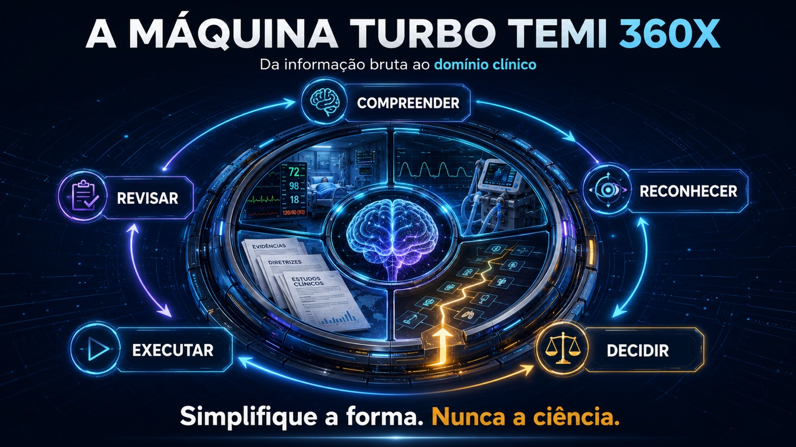

Exposição de paciente
Texto, nome, URL, imagem e metadados são verificados. Material P2/P3 permanece no cofre privado; quando seguro, gera-se somente derivado sanitizado e rechecado.

NEXUS 23X · ENGENHARIA COGNITIVA MÉDICA
No centro, o tema. Ao redor, sete formas de compreender, agir, reavaliar e aprender — sem perder tempo, incerteza, fonte ou contexto.
A BASE ONTOLÓGICA NÃO MUDA
U1, U2 e U3 permanecem como as três lentes fundamentais. As constelações cruzam essas lentes sem duplicar o conhecimento.
MAPA ORBITAL DETERMINÍSTICO
Selecione uma lente. O NEXUS mostra apenas as relações úteis para a tarefa atual e mantém uma lista semântica equivalente.
data/connections.jsonFusão completa ativa.
SETE ROTAS, O MESMO NÚCLEO
Cada portal responde a uma necessidade cognitiva diferente e retorna ao mesmo tema versionado.
BARRAMENTO PRONTO PARA ALIMENTAÇÃO
Treze blocos de acoplagem, incluindo referências, auditoria e uma porta de extensões, compartilham schema e topologia ###TAG. Cada entrada já nasce localizável em U1, U2 e/ou U3 e preparada para gerar arestas revisáveis.
COMANDO ÚNICO
NEXUS ACOPLAR: #bloco | fonte=<arquivo-ou-link> | objetivo=<resultado>
SESSÕES AUDITADAS · ROTAS TOMBADAS
Estas rotas permitem revisar bytes, códigos, fontes e relações catalogados. HOM, TOM e TAF ficam registrados nos manifestos; nenhum card autoriza merge, Pages ou publicação oficial.
Atlas operacional sintético com oito imagens codificadas, referências metodológicas e auditoria rastreável.
####AGX-MUX-PROD-20260801-0001-D0394A79
Abrir sessão e verificar a cadeia →
TAF PREPARADO · P0 · LOCK
Duas imagens sintéticas com identidade física própria, C2PA preservado e fronteira explícita de uso não diagnóstico.
####AGX-U3-IMGT-20260801-0001-2C0470E6
Abrir sessão e verificar a cadeia →
SEGUNDA CHECAGEM · FAIL-CLOSED
Todo produto, imagem, documento ou edição recebe um registro AUD###. Falha ou evidência ausente interrompe o fluxo; auditoria aprovada não cria TAF nem publica por conta própria.
Texto, nome, URL, imagem e metadados são verificados. Material P2/P3 permanece no cofre privado; quando seguro, gera-se somente derivado sanitizado e rechecado.
Autoria, origem, licença, permissão e atribuição precisam ser demonstráveis. Asset de terceiro sem base de uso fica bloqueado, sem cópia ou republicação.
Alegações clínicas exigem fonte pertinente, limites e fidelidade ao desenho. Conteúdo sem apoio recebe plano de referências e não atravessa o gate público.
REGISTRO DA SEGUNDA CHECAGEM
O registro conserva hash, resultados de privacidade, direitos, ciência e integridade técnica, revisor e data. Resultado padrão: bloqueado até revisar.
AUD###-{ESCOPO}-{AAAAMMDD}-{SEQ4}-{HASH8}
Projetos pessoais, jurídicos, financeiros, administrativos e do ecossistema tecnológico vivem em grafos privados PRV-PER, PRV-JUR, PRV-FIN, PRV-ADM e PRV-TEC. Podem usar Local, Notion e Drive privados; nunca GitHub, Biblioteca pública, Mapa Vivo público ou site. O mapa público enxerga somente um limite abstrato, sem título, pessoa, valor, processo ou link.
TOPOLOGIA FUSIONAL
As TAGs triplas descrevem onde e em que estado o item vive. As TAGs simples descrevem o assunto. Nenhuma aresta vira definitiva antes da revisão humana.
VIA COMUM DE CADA SESSÃO
IDENTIDADE IMUTÁVEL
Pacientes usam código privado aleatório e nunca entram no catálogo público. O rascunho recebe ####AGX; cada ação recebe PRC###; a segunda checagem recebe AUD###; homologação recebe HOM###; tombamento recebe TOM###; só então pode nascer o TAF### final.
Código desta estação: ####AGX-MUX-EXT-20260731-0001-847D3013. Consulte o manifesto de release para a cadeia vigente; publicação oficial exige o comando literal do TAF correspondente.
PUBLICAR TAF###-{UNIVERSO}-{BLOCO}-{DATA}-{SEQUÊNCIA}-{HASH8}
ROTEAMENTO POR AUTORIDADE
As superfícies sincronizam somente conforme domínio, destino registrado, chave idempotente e gates. Main e site oficial permanecem travados até PUBLICAR TAF###-…. P1–P3 e todos os domínios privados nunca atravessam o limite público.
MOTOR VISUAL TURBO TEMI
Timeline, tabela, gráfico, imagem, ACRA, produto Turbo TEMI e subgrafo são vistas do mesmo núcleo — nunca cópias desconectadas.
RECEITA
EVOLUÇÃO → CASE-IR → AÇÃO → REAVALIAÇÃO
O mesmo núcleo sintético é reconstruído em quatro profundidades. Completude significa recuperar tudo quando necessário — não despejar tudo ao mesmo tempo.
LABORATÓRIO SINTÉTICO
COSMIC DIFF
Compara snapshots observados; nenhum crescimento é inferido quando não há evidência.
ATLAS VISUAL 1–20
Vinte derivados JPEG sanitizados, com proporção preservada e integridade física distinta da fonte PNG declarada.
Nenhuma imagem corresponde a este filtro.
DA FONTE À COMPETÊNCIA
O motor separa fatos, inferências, lacunas e sugestões; só então escolhe a representação, conecta o grafo e cria aprendizagem.
Inventário, identidade, corte temporal, privacidade e proveniência entram antes de qualquer síntese.
O texto linear vira átomos com tempo, certeza, prioridade, origem e relações explícitas.
A relação decide a forma: timeline, matriz, algoritmo, imagem, checklist, passagem ou grafo TAG.
Tentativa, feedback, correção e retomada transformam o mesmo caso em competência recuperável.
POTENCIAL — A VALIDAR PROSPECTIVAMENTE
Esta arquitetura não promete desfecho clínico. Ela cria condições testáveis para reduzir perda de contexto, tornar incerteza visível e fechar o ciclo entre decisão, execução, reavaliação e estudo.
Radar 10 s e Caso 60 s apontam para o conjunto completo, sem apagar fonte ou lacuna.
P0–Pn e o contrato Ação→Alvo→Prazo→Reavaliação convertem intenção em item verificável.
TAGs e arestas conectam mecanismos, imagens, arsenal e questões sem duplicar o nó-tema.
Erros e dúvidas viram micropartículas, perguntas e retomadas com feedback após tentativa.
Fato, inferência, conflito e ausência permanecem classes distintas; QR0–QR8 bloqueiam atalhos frágeis.
Snapshots permitem medir cobertura, órfãos, revisão e interconexões sem fabricar tendência.
PONTES VERIFICADAS E CONTROLADAS
A fonte primária continua sendo o site canônico e o repositório GitHub. Observatórios externos permanecem apenas como links autenticados, sem sincronização automática.
O NEXUS organiza informação e apoio cognitivo; não substitui avaliação à beira-leito, julgamento clínico, protocolo institucional, fonte oficial, supervisão ou revisão médica humana. Nesta estação, todo caso é sintético e nenhuma dose ou prescrição universal é gerada.